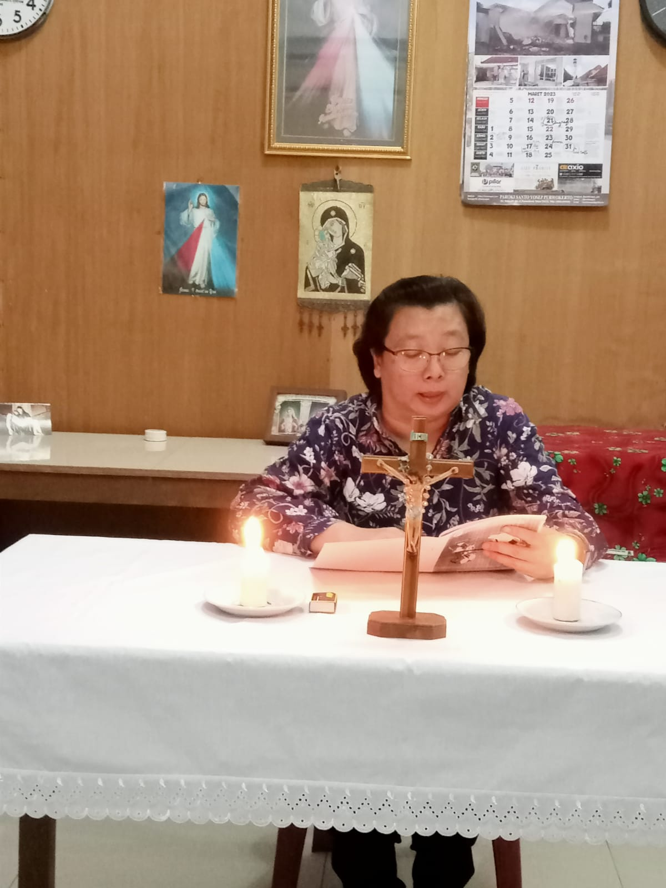

Pendalaman Iman APP ke 5
|  | ||
PERTEMUAN V “ SEMAKIN PEDULI PADA JERITAN BUMI DAN SESAMA YANG MENDERITA”
Pengantar
Keadilan Allah dalam Kitab Taurat terlihat dalam keberpihakanNya kepada kaum yang lemah dan kecil (bdk. Kel. 20:22-23:33). Seperti kepada para budak (kuli) diberi hak meski terbatas (bdk. Kel.21:1-11). Pada hari Sabat hak istirahat bekerja juga diberi kepada kaum kecil dan ternak (bdk. Kel.23:12). Hak-hak orang asing, anak yatim, dan janda juga tidak mereka lupakan. Umat Israel juga dipanggil untuk membangun suatu persaudaraan di mana ada kemerdekaan dan pengakuan hak-hak sesama (Ul. 22:1-4). Oleh karena itu, persamaan martabat semua manusia dan tujuan untuk kesejahteraan bersama, mengarahkan keadilan sosial untuk memberi perhatian kepada mereka yang miskin dan membutuhkan bantuan (lih. Katekismus Gereja Katolik, 1928). Paus Fransiskus mengingatkan kita, seandainya Allah membatasi Diri-Nya hanya pada keadilan, Ia akan berhenti menjadi Allah, dan sebaliknya Ia menjadi seperti manusia, yang hanya minta agar hukum dihormati. Oleh karena itu hanya keadilan tidaklah cukup. Pengalaman menunjukkan bahwa tuntutan pada keadilan saja akan mengakibatkan kehancuran. Itulah sebabnya Allah melangkah melampaui keadilan dengan belas kasih dan pengampunan-Nya (bdk. Misericordia Vultus (Wajah Kerahiman/MV, 2013, 21).
Insipirasi Kitab Suci : Surat Rasul Paulus kepada Jemaat di Filipi (Filipi 2: 1- 11)
2:1 Saudara-saudara, dalam Kristus ada nasihat, ada penghiburan kasih, ada persekutuan Roh, ada kasih mesra dan belas kasihan,
2:2 karena itu sempurnakanlah sukacitaku dengan ini: hendaklah kamu sehati sepikir, dalam satu kasih, satu jiwa, satu tujuan,
2:3 dengan tidak mencari kepentingan sendiri atau puji-pujian yang sia-sia. Sebaliknya hendaklah dengan rendah hati yang seorang menganggap yang lain lebih utama dari pada dirinya sendiri;
2:4 dan janganlah tiap-tiap orang hanya memperhatikan kepentingannya sendiri, tetapi kepentingan orang lain juga.
2:5 Hendaklah kamu dalam hidupmu bersama, menaruh pikiran dan perasaan yang terdapat juga dalam Kristus Yesus,
2:6 yang walaupun dalam rupa Allah, tidak menganggap kesetaraan dengan Allah itu sebagai milik yang harus dipertahankan,
2:7 melainkan telah mengosongkan diri-Nya sendiri, dan mengambil rupa seorang hamba, dan menjadi sama dengan manusia.
2:8 Dan dalam keadaan sebagai manusia, Ia telah merendahkan diri-Nya dan taat sampai mati, bahkan sampai mati di kayu salib.
2:9 Itulah sebabnya Allah sangat meninggikan Dia dan mengaruniakan kepada-Nya nama di atas segala nama,
2:10 supaya dalam nama Yesus bertekuk lutut segala yang ada di langit dan yang ada di atas bumi dan yang ada di bawah bumi,
2:11 dan segala lidah mengaku: “Yesus Kristus adalah Tuhan,” bagi kemuliaan Allah, Bapa!
Pertanyaan Renungan / Sharing :
- Setelah membaca Firman Tuhan tadi, manakah kata atau kalimat yang mengesan? Ungkapkan dan bacakan bagi sesama!
- Sebentar lagi kita rayakan Paskah. Kita rayakan Yesus yang mengsongkan diri, sengsara, wafat, dimakamkan dan bangkit pada hari ketiga. Kristus membaharui ciptaan yang telah rusak dengan menebusnya. Keselamatan terjadi. Syukur dan pujian bagi kemuliaan-Nya. Sebagai wujud syukur atas keselamatan yang kita terima, apa yang akan kita buat supaya kebersamaan dengan sesama semakin sejahtera dan alam ciptaan makin utuh terpelihara sehingga membawa berkah bagi manusia dan alam ciptaan?
RENUNGAN / PENEGASAN
Butir-butir permenungan/penegasan:
- Keterlibatan Gereja di tengah dunia tidak dapat dilepaskan dari penghayatan iman yang tumbuh dan berkembang dalam Gereja. Penghayatan hidup beriman umat berangkat dari peristiwa Allah yang menjelma menjadi manusia dalam diri Yesus. Allah yang hadir dalam diri Yesus merupakan Allah yang mau solider dengan kehidupan manusia. Allah berkenan merendahkan diri-Nya dan menjadi sama seperti manusia (Filipi 2:6-7). Paulus mengatakan bahwa Yesus, yang walaupun dalam rupa Allah, tidak menganggap kesetaraan dengan Allah itu sebagai milik yang harus dipertahankan, melainkan telah mengosongkan dirinya, dan mengambil rupa Allah yang ingin solider dengan hidup manusia mendorong Gereja untuk terlibat dalam perjuangan dan keprihatinan manusia.
- Perhatian Gereja Katolik sebagai sakramen keselamatan bagi seluruh ciptaan-Nya telah menaruh kepedulian yang mendalam terhadap masalah lingkungan hidup baik dalam refleksi biblis-teologis-ASG, Nota Pastoral, Tema APP, HPS dan BKSN maupun aksi-aksi atau gerakan konkret lainnya. Namun Paus mengundang umat Kristiani untuk lebih peduli dan lebih aktif lagi dalam melindungi alam ciptaan dan saudara yang rentan dan tersingkir akibat krisis iklim yang sedang terjadi.
- Kita diajak mengakui dan menyadari bahwa krisis ekologis terjadi karena wujud sikap manusia yang tidak bertanggung jawab. Kita diajak untuk memperbaharui dan mengubah pemahaman konsep iman tentang alam semesta, bahwa manusia dan alam semesta adalah obyek karya keselamatan Allah. Karena itu praksis hidup Kristiani mesti diinspirasikan dan didorong oleh peristiwa kenosis Allah (Sabda menjadi manusia dan tinggal di antara kita) (lih. Yoh 1:14). Seperti Allah, yang menyatakan kasih-Nya dalam diri Yesus Kristus berbagi cinta pada seluruh ciptaan-Nya, maka hendaknya kita pun berbagi cinta pada ciptaan lainnya.
- Buah dari kesadaran dan pertobatan ekologis adalah bertindak ekologis. Kita hendaknya menjadi pribadi-pribadi yang mengasihi dan menyayangi setiap bentuk kehidupan serta menjaga, merawat, dan melestarikan alam semesta. Respon terhadap seruan kaum miskin adalah panggilan untuk mempromosikan keadilan lingkungan, sadar bahwa kita dipanggil untuk mempertahankan kehidupan manusia dan semua bentuk kehidupan di Bumi (lih. LSAP, 2).
- Kita umat Keuskupan Purwokerto dipanggil untuk menjalankan fungsi kenabiannya (profetis). Kita membutuhkan kerja sama dan bergabung dengan siapa saja yang berkehendak baik untuk melakukan profetis ekologis ini. Paus Fransiskus mengajak kita untuk mengesampingkan segala perbedaan ketika berhadapan dengan penderitaan dan menjadi dekat dengan siapa saja yang mengalaminya (lih. FT, 80). Kita juga diajak untuk mewujudkan ketahanan dan pemberdayaan kaum rentan/marginal yang mengandaikan adanya keterlibatan masyarakat dan aksi partisipatif di berbagai tingkatan (lih. LSAP, 7).
Rencana Aksi
(Pemimpin dapat mengajak peserta berdiskresi bersama menentukan bentuk dan waktu pelaksanaan aksi nyata komunitas basis/lingkungan dalam merespon jeritan sesama yang menderita, kecil, lemah, miskin, tersingkir dan difabel.)
Materi tulisan dari Buku Pendalaman APP 2023 yang disusun oleh Panitia APP Keuskupan Purwokerto